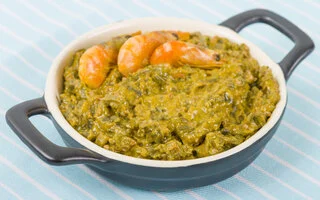

Acarajé
Ingredientes
500g de feijão fradinho cru
500g de cebola
Sal a gosto
1 cebola pequena com casca
500ml de óleo
500ml de azeite de dendê
2 xícaras de chá de vatapá
50g de camarão seco
Modo de preparo
Coloque os feijões inteiros num processador de alimentos e bata por alguns segundos para quebrar os grãos. Coloque os feijões num recipiente e cubra com água. Deixe de molho por no mínimo 12 horas. Agite os feijões com uma colher e com uma peneirinha vá retirando todas as cascas que se desprendem dos feijões. Depois de retirar bastante as cascas, lave os feijões sob a água corrente. Descasque as cebolas e corte-as em pedaços. Num processador, coloque os feijões e as cebolas. Bata por 3 minutos, ou até obter uma pasta lisa e uniforme. Retire toda a pasta do processador e coloque dentro de uma panela grande e funda. Com uma colher de pau, bata a massa do acarajé até que a massa triplique de volume. Esse processo é bastante demorado mas é importantíssimo para a fermentação. Coloque o óleo, o azeite de dendê, e a cebola com casca numa panela média e leve ao fogo alto para esquentar. Com duas colheres de sopa, modele os acarajés: encha uma das colheres com a massa, passe de uma colher para a outra até que a massa fique com formato de bolinho. Coloque os bolinhos no óleo bem quente e frite por 3 minutos de um lado. Com uma escumadeira, vire os bolinhos e deixe fritar até que fiquem dourados. Retire os bolinhos com uma escumadeira e coloque sobre papel absorvente. Corte os bolinhos ao meio e recheie com vatapá. Coloque o camarão seco dentro do acarajé e feche.
Cuscuz
ingredientes
3 xícaras de chá de fubá (flocos grandes)
1 xícara de chá de água
1 colher de chá de sal
400ml de água
Modo de preparo
Em um recipiente, adicione o fubá e umedeça com a água e acrescente o sal. Deixe descansar por 5 minutos. Em seguida coloque água na panela. Transfira o fubá para a panela. Cozinhe por cerca de 10 minutos, até começar a exalar aroma e a soltar das laterais da forma.
Caruru
Ingredientes
1 kg de quiabo picadinho
250ml de leite de coco
100g de amendoim torrado e sem casca
2 cebola pequenas
100 g de camarão seco
1/2 limão
1/2 xícara de chá de azeite de dendê
Sal a gosto
Modo de preparo
Coloque em uma panela o quiabo picado. Bata 50 g de camarão no liquidificador com meia xícara de água e peneire. O restante do camarão coloque na panela com o quiabo e meio limão espremido. No liquidificador, bata o caldo do camarão, a cebola cortada em quatro partes, o leite de coco e o amendoim. Bata bem. Verifique o sal. Em seguida, coloque na panela que está o quiabo o conteúdo do liquidificador. Ligue o fogo médio e adicione o azeite de dendê e os camarões restantes. Mexa com uma colher de pau por uns 25 minutos.